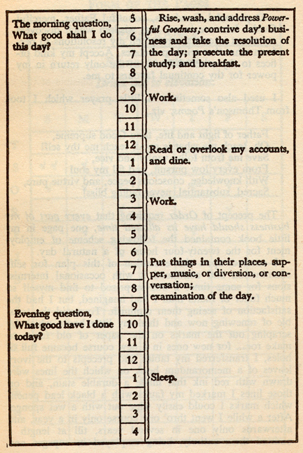

Time affluence
The feeling of having enough discretionary time. The creator treats it as the real wealth metric once basic needs are met, because money without time still feels like scarcity.
via DXCETV9DGj8This page reads @lhuijuni.ldn as a field guide to high-cost-city capitalism. Money is not treated as a neutral spreadsheet; it becomes time, body maintenance, career signaling, housing math, platform soft power, luxury absurdity, and macro-finance folklore.

The creator's strongest personal-finance move is to stop asking whether someone earns enough in the abstract. She asks whether money turns into time affluence: the felt ability to decide what your hours are for.
This matters because high earners often buy convenience only after work has already consumed the day. Food delivery, Ubers, premium gyms, services, and biohacking routines can look like abundance while actually documenting time scarcity.
In this frame, wealth is not a number in a salary band. It is a relationship between money, calendar, body, commute, dependents, taxes, housing, and the psychological feeling that life is not always rushing past you.
HENRY means High Earner Not Rich Yet. The useful part of the framework is that it separates income status from actual security. A person can look economically successful while remaining far from ownership, slack, or resilience.
The London example is especially sharp because the story is not simply personal overspending. It combines tax thresholds, childcare, lifestyle inflation, rent, mortgage barriers, and professional expectations into a situation where earning more can feel like standing still.
That is why the creator's sardonic tone works. The absurdity is real: the system praises ambition, then makes the rewards feel too delayed or too conditional to stabilize a life.
The creator's body-as-brand argument is not a shallow comment about vanity. It is a diagnosis of professional inflation. Degrees, job titles, and salaries no longer feel like enough, so the polished body becomes another proof of discipline, taste, and competitiveness.
This is where wellness becomes economic language. The expensive gym, the calibrated body, the skincare routine, the biohacking phrase, and the optimized morning are all signals that a person can absorb pressure and still look composed.
The real critique is that this asks people to treat the body as a public-facing asset. Even refusal becomes difficult, because opting out can look like failing to play the game everyone else is forced to acknowledge.
The creator's finance posts often turn technical ideas into social folklore. Activist short-selling becomes detective work with a profit motive. Carry trade becomes a story about Japanese household investors. Financial nihilism becomes a generational mood after homeownership stops feeling reachable.
This is why the notes belong in the language-memory cluster. Terms like HENRY, Mrs. Watanabe, activist short-selling, and financial nihilism are not just finance vocabulary. They are cultural containers for fear, agency, gender, class position, and distrust.
The point is not to teach investing. It is to show how economic language gives people a way to narrate pressure when older promises of work, saving, and property no longer feel reliable.
The China soft-power post is strongest when it contrasts official cultural institutions with attention-economy desire. A Confucius Institute represents state-backed cultural projection. Labubu represents a different route: consumer IP, collectability, meme velocity, and the global spread of cute objects.
That sits next to the late-capitalism luxury posts because both ask who gets to define aspiration now. Goldman, Balenciaga, Pop Mart, and platform celebrity do not belong to the same category, but they collide in the same attention environment.
The result is multipolar modernity as lived confusion: people read brands, countries, influencers, and institutions as competing signals of what progress, taste, status, and belonging are supposed to look like.
The feeling of having enough discretionary time. The creator treats it as the real wealth metric once basic needs are met, because money without time still feels like scarcity.
via DXCETV9DGj8High Earner Not Rich Yet: the status contradiction where a person earns well but remains far from durable wealth because housing, taxes, childcare, and lifestyle costs absorb the gain.
via DUl5YiHDgIeThe body becomes a public credential in competitive cities, signaling discipline, taste, and economic capacity alongside degrees, jobs, and salaries.
via DWe5evKDiMJA loss of faith in traditional wealth-building paths. When ownership feels unreachable, immediate pleasure and volatile bets can start to feel rational.
via DVZRSsbDlEfSpending rises both voluntarily and defensively: image maintenance, convenience purchases, premium health routines, and services that compensate for time scarcity.
via DUl5YiHDgIeA technical currency strategy becomes culturally memorable through the figure of Mrs. Watanabe, turning household finance into macro-finance mythology.
via DUtDpjVjELvResearch, accusation, public evidence, and profit become intertwined. The practice is ethically tense because reputation damage and market gain arrive together.
via DU-9p61jCwiWestern aspiration is no longer the only reference point. Cultural power now moves through institutions, brands, toys, platforms, and attention loops at once.
via DVFB_pUjCOKReframes wealth as the ability to control time, not only the ability to buy more.
Explains how a high income in London can fail to become security or freedom.
Reads bodily maintenance as a new professional status signal.
Connects homeownership despair with consumption, volatile assets, and work refusal.
Turns carry trade into a gendered household-finance story.
Explains how public research, corporate accusation, and market position connect.
Compares formal cultural institutions with the faster spread of consumer IP.
Places Goldman, Balenciaga, and late capitalism inside the same symbolic economy.